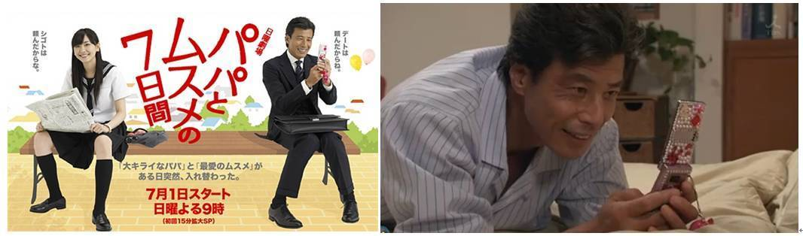
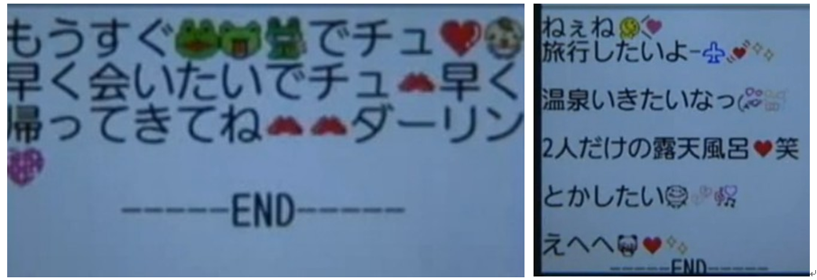
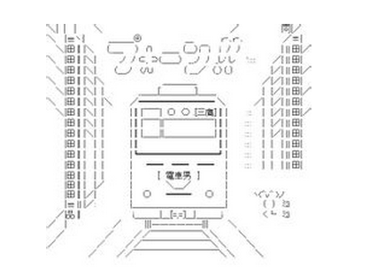
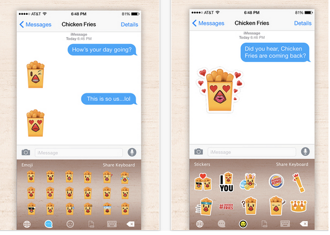
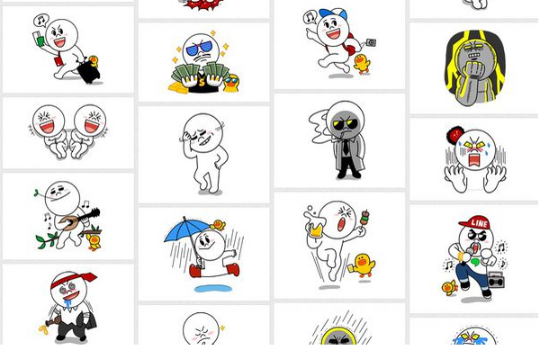
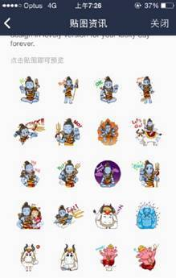

Emoji在日本的发展不能越过推动力的就是女高中生JK的力量。无论是最初键盘手机的颜文字符号，还是line的各种表情标贴，最大使用群体总是喜欢可爱和新鲜事物的女子高中生。

女子高中生和手机总有分不开的点
在日剧或者漫画里，用翻盖机单手超快打字，语气温柔可爱再附加各种萌系颜文字表情，这是对于女子高中生短信的固定吐槽梗。例如日剧父女七日变中，就是用一些使用手机的小细节来表现，女高中生和大叔的不同。
用水钻装饰的翻盖机，女高中生几年前的标准配置
轻快的文字和充满了各种可爱的表情
日本手机的颜文字大多数是用键盘可提供的字符所构成，已经可以称得上是ACCII Art艺术了。ASCII码（American Standard Code for Information Interchange，美国标准信息交换码）是由美国国家标准局(ANSI)制定的字符集及其编码，ASCII原是美国的一种文字艺术，经日本人改造并发扬光大后流行于日本。在数年前闻名的日剧，电车男中，设定帅气的IT天才就是论坛使用颜文字绘图的高手。
在揭示版上面用文字绘画，这是每一集都会出现的固定情节也是2CH的特色。

颜文字和可爱的文字也越来越夸张了
虽然翻盖手机的私密性更好，不过依然不妨碍苹果或者安卓平台的智能手机在日本的发展，随着line的普遍使用，付费使用表情也成为日本特别的商业模式。在欧美，例如有汉堡王，会和表情制作公司合作，制作属于自己品牌的免费使用表情，付费方仅仅是企业和品牌。但是在日本，表情的制作和上架是免费的，付费的是实际的使用客户。这一种商业模式和全球其他地区都截然不同。
欧美的商业表情，是品牌方买单，出发点是推广产品和品牌
Line的表情付费是开架让创作者上传，费用由使用者支付下载。是一个提供给表情创作和交易的平台
Line平台的表情付费服务，让更多的创造者能够直接的得到回报，而基于长尾效应，小众的商品销量累积与流行商品的收益持平或者超过，所以小额的表情的付费购买集结起来却成为一个巨大的消费力量，仅在2013年，贴图表情就让line在本财年收入3.38亿美金，平均每个月可以盈利1000万美元, 2014年单季度销量达到12.3亿日元，约合6300万人民币，这样的吸金能力，鹅厂当然在微信毫不脸红的直接照抄了这个模式。即使是以不大喜欢付费的中国市场，也逐步的接受了小额的内购增值，包括QQ表情在内的增值服务业务的收入2014年第四季达到171.37亿人民币，这还不包括我所说的丧病模式的传播。
印度神的表情，相信只有喜欢这个文化的人才会专门购买，但是如果喜欢看DKDM众神之神和摩柯婆罗多的人，一定不想错过这套表情。这就是网络商品能够更满足小众需求的实际案例。
不喜欢的人不会去花时间，喜欢的人一定会舍得掏钱购买的，这就是Line的想法。